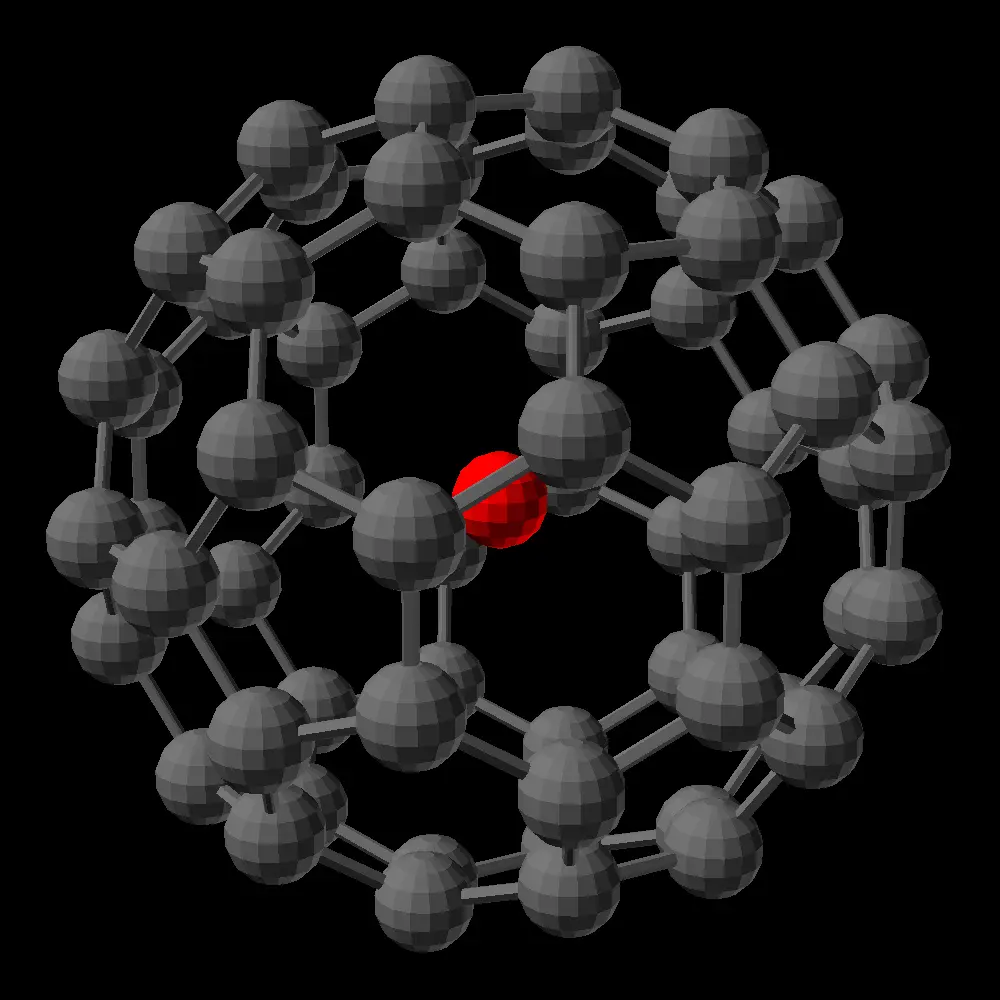

link to this page
Antiproton Endofullerenes
This page relies on information that has mixed scientific support and might end up disproven in the near future

Scientific evidence that producing stable antiproton endofullerenes is limited and unclear.
Ultimately I decided that their limited impact on the setting combined with their usefulness as a plot device for the whole category of scenarios involving very distant locations justifies sticking with them despite not being convinced of their viability.
Document with math behind their properties and usage can be found here.
Antiproton Endofullerenes are a stable method of antimatter storage, which uses the potential well inside C60 fullerenes to contain antiprotons.
Their viability had been experimentally proven all the way back in the early 21st century, following some earlier speculation that it might be possible.
In spite of that, state of the art systems never managed to become efficient enough to allow widespread use of this technology.
Antimatter technology in the modern day remains almost as unknown and abstract to most people as it was back when it did not exist at all, with the primary use case being as an extreme high-density fuel for long-distance, high-velocity interstellar missions.
Sufficiently optimized spacecraft using antiproton endofullerene fuel can achieve over 1 million seconds of specific impulse and amass velocity budgets over 20% of the speed of light.
Very few niche applications exist where the unmatched extreme energy density is for some reason necessary and justifies the cost.
Production of antiproton endofullerenes
Antiproton endofullerenes are produced in massive solar-powered factories.
Particle colliders are used to produce antiprotons, with an efficiency of about 25% of electrical to kinetic energy and then 5% efficiency to capture the produced antiprotons.
The antiprotons are then focussed into a beam, which is crossed with a stream of C60 buckyball particles, and about 1 in 1000 collisions between the two result in the antiproton ending up trapped in the middle of the buckyball instead of annihilating against one of the carbon atoms.
Succesful capture deflects the stream enough for the product to be separated and immediately collected with nearly 100% purity.
The final efficiency of such systems is about 0.0000125, meaning that 1 joule put into production will end up returning about 0.0000125 joules worth of antiproton endofullerenes.
A 1-gigawatt antiproton endofullerene factory can produce about 8.6712mg of the product per day (24h), which would contain 1.08GJ of energy.
storage and safety
Antiproton endofullerenes are stable in storage as long as they are kept at reasonable temperatures (below 800 kelvin) and away from chemicals that could react with the carbon to disrupt the buckyball structure (eg. oxygen).
A chain reaction is easily possible, and in environments where atmospheric oxygen is present, the molecules will break on contact with fire, leaving the antiprotons free to escape containment and annihilate.
Quantities that are just barely visible to unmodified human eye are capable of detonating with energy equivalent to multiple kilograms of TNT, but not the same visible effect.
In the case of small amounts of antiproton endofullerenes releasing their energy, the damage will not be spectacular, since most of the energy is released in highly penetrating and ionizing radiation.
This spreads out the thermal energy, since heat is deposited into a large volume of nearby material instead of concentrated at exposed surfaces or nearby air, which is much more likely to cause immediate catastrophic damage to biological and nanotech systems than to cause physical destruction of bulk materials.
The fullerenes could easily be dispersed into the air, in which case any open flame in the area will also become a radiation hazard.
Buckminsterfullerenes can also link together to form a solid, which in the case of plain fullerenes is known simply as fullerite, but is often colloquially referred to as demonite when made from fullerenes that carry antiprotons inside.
Properties of bulk antiproton endofullerenes
| bulk antiproton endofullerene properties |
|---|
| Density | 1652.289759 kg/m3 |
| Specific energy | 124.5503301 TJ/kg |
| Energy density | 205.7932349 PJ/m3 |
| Molar mass | 0.7216 kg/mol |
As a rocket fuel, antiproton endofullerenes can provide over 1 million seconds of specific impulse (roughly or slightly more than 10 megametres per second of exhaust velocity).